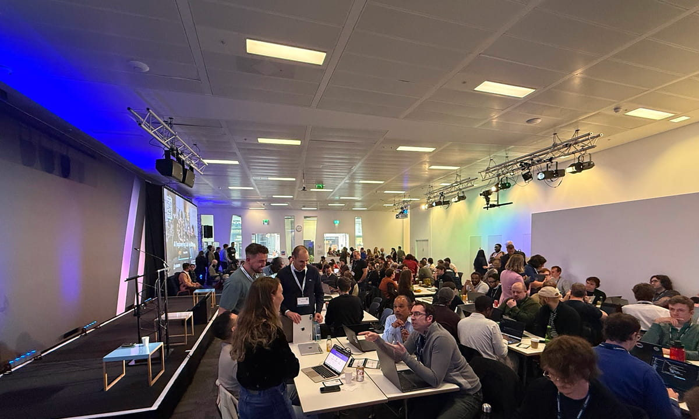
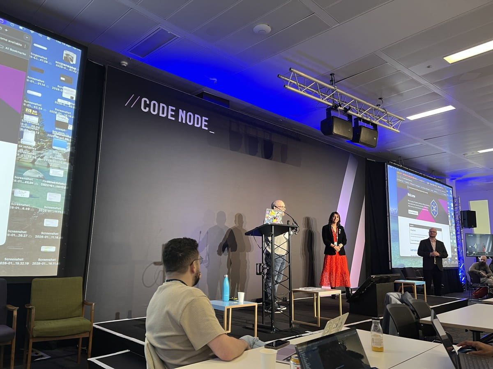
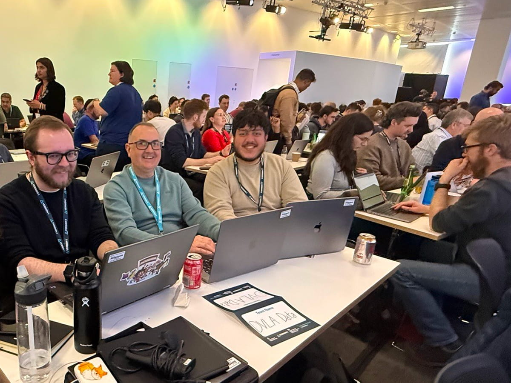
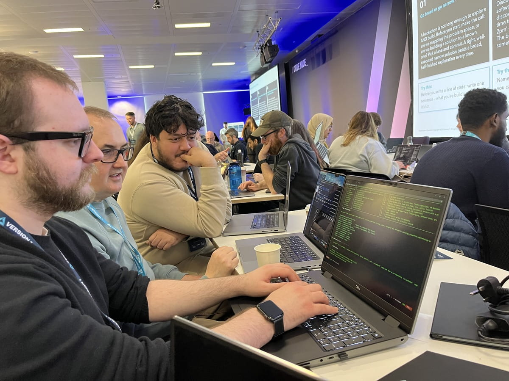
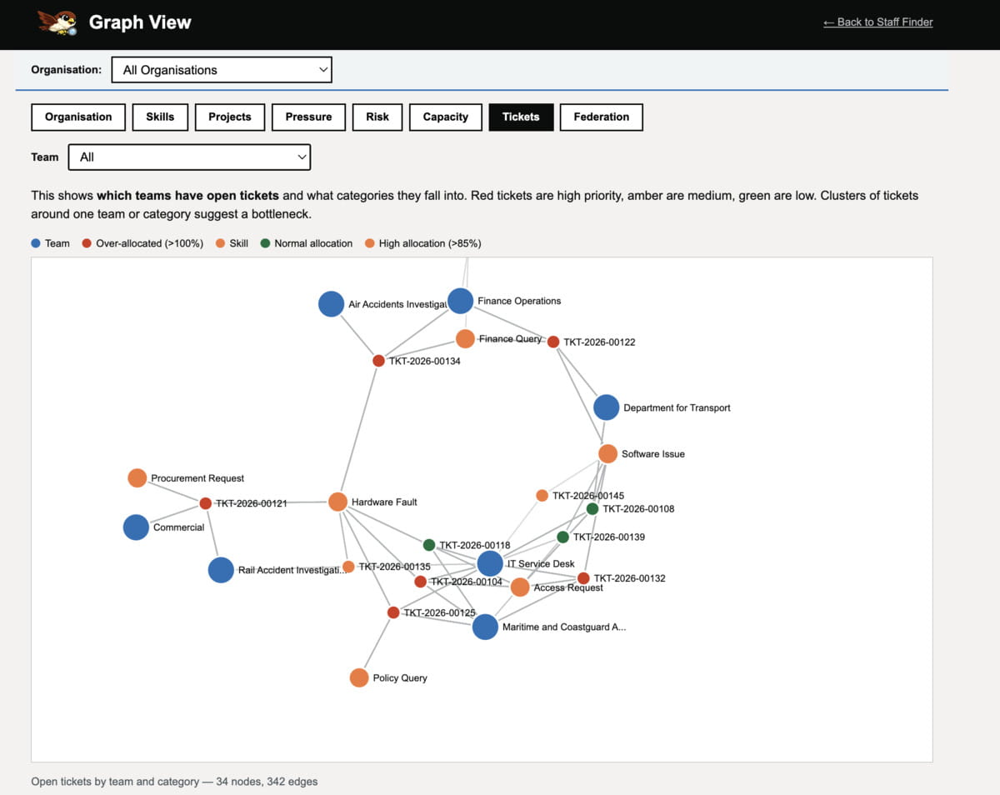
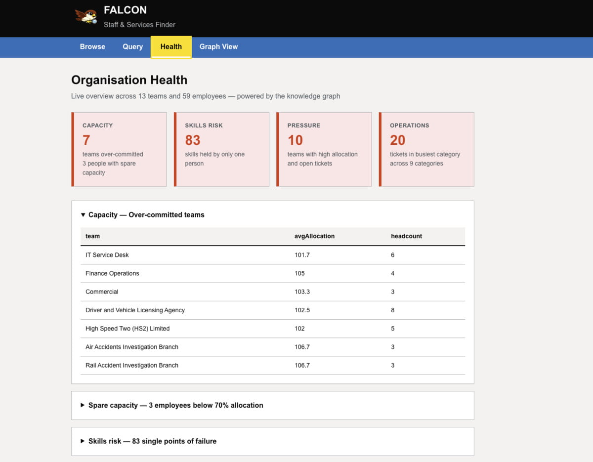
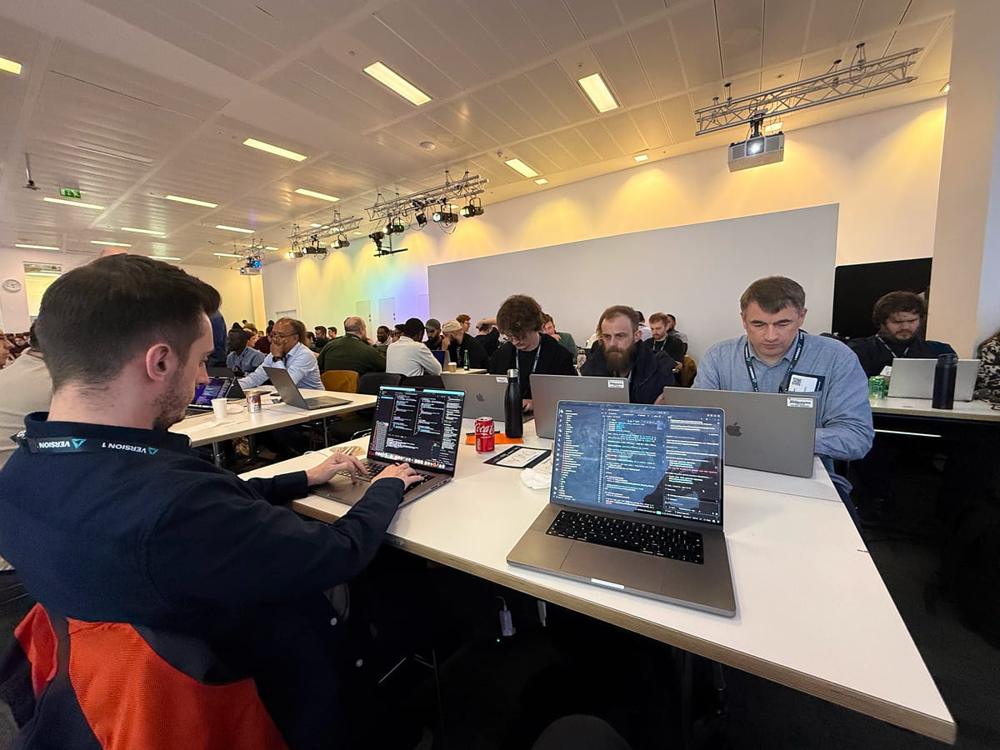
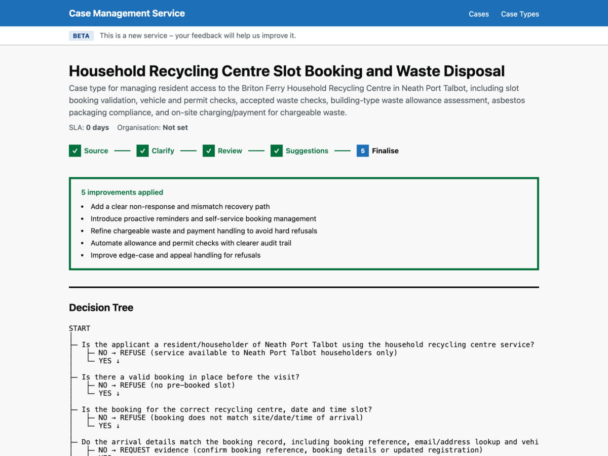
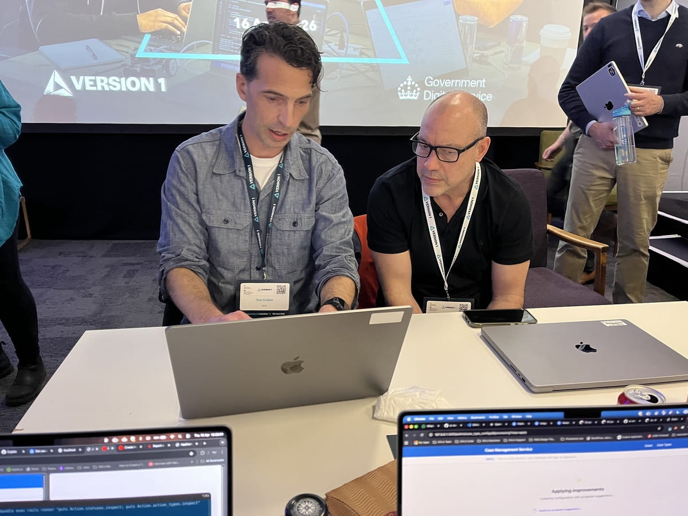

On the 16th of April 2026, data and software engineers from DVLA went to the AI Engineering Lab Hackathon at CodeNode in London. This was a cross-government event led by the Department for Science, Innovation, and Technology (DSIT) and Version 1.
The event brought public sector engineers together to explore how far AI can go in supporting public services, and there were representatives from major vendors like Anthropic, AWS, and Microsoft on hand to provide support throughout the day.
The day tested a practical question for delivery teams: can agent workflows help solve real service problems faster without losing engineering discipline?

The hackathon took place at CodeNode, a tech venue in Central London. The event was organised by the Department for Science, Innovation, and Technology (DSIT) and Version 1, and over 150 engineers from across government attended to test out new AI tools and techniques on real delivery problems.
Much of DVLA’s day-to-day work is sensitive, so the hackathon gave teams a rare chance to experiment on a problem without the usual constraints. They arrived early to get set up before the welcome and challenge selection, and the room quickly filled with teams chatting and comparing ideas as everyone settled around tables.
Teams were presented with four challenges drawn from real cross-government needs:
- From PDF to digital service: replace paper forms with a proper digital process
- Unlocking dark data: make government guidance findable
- Supporting casework decisions: help caseworkers get the right information faster
- Knowing your own organisation: connect people, projects, and workload across siloed systems
After the warm welcome, the rest of the day was filled with build sessions broken up by regular lightning talks from government and industry partners like Microsoft, Anthropic, and AWS. Judges visited teams throughout and scored against a rubric.

The Cross-Government Software Engineering Community giving a lightning talk on the stage at CodeNode, London.
The atmosphere was energetic and collaborative, with a strong sense of shared learning across the room. Rapid-fire talks set the pace, while engineers and vendor representatives moved between tables to offer suggestions, challenge assumptions, and help teams unblock problems.
DVLA entered two teams: ‘DVLA Data’ from Data Engineering and ‘DVLAi’ from Software Engineering.
DVLA Data: Building a Knowledge Graph for Organisational Intelligence
The team was made up of Data Engineers from across the agency: Simon, Iwan, Alice and Fahad.
Modern data engineering overlaps with software engineering more than it used to. “The DVLA Data team are all data engineers now, but we came from backgrounds including business intelligence, CoDE, and data science”, Simon said. “Recently, we’ve been exploring knowledge graphs at work, and the team believed they could solve many data problems”, he added.

A snap of the DVLA Data team at their table at the AI Engineering Lab Hackathon, taken by Alice. From left to right; Iwan, Simon, and finally Fahad.
At their core, Resource Description Framework (RDF) knowledge graphs represent information as triples like subject, predicate, and object. This means relationships like ‘Alice works-on Project X’ or ‘Project X belongs-to Team Y’ can be formed across different systems without needing a shared schema up-front. Each relationship becomes a link in the graph, making it possible to traverse connections that would otherwise require complex joins across multiple databases. Choosing Challenge 4, ‘Knowing your Organisation’ gave the team an opportunity to use the technology on something new.
The hackathon also gave the DVLA Data team real, hands-on time with new working processes; most of the team had limited AI experience, and those who had used AI tools before had mostly worked in an iterative, vibes-based way, reacting to what the agent returned. Simon revealed the team wanted a different approach: “We wanted to set up a more agentic workflow where we gave the agent clear direction and let it run with it, rather than trying to steer it at every step”.
Asked how the team approached the problem, Simon explained; “We wrote markdown files that set out what we wanted to build and the rules the agent had to follow, then let it run”. Those planning documents became the agent’s instructions. The agent made decisions within boundaries the team set, rather than being directed through implementation line by line. This up-front approach where the agent is given autonomy to work toward engineering goals is the first pillar of agentic development, with iterative rounds of planning, executing, testing, self-correcting, and feedback closing the loop and leading to rapid prototype development.

The DVLA Data team working as a mob around one screen, sharing ideas and steering the agent together.
The team worked as a mob: everyone around one screen, ideas being shared freely, with nobody off in a corner on their own task. One person ‘drove’ at first while everyone else shaped ideas and refined the markdown guides. Later, they scaled to two drivers and two supporters. Starting with one driver avoided early merge clashes, then scaling up the approach kept the pace up once the direction was clear.
The team checked the agent’s outputs and corrected course when things diverged from the plan, but they didn’t write code directly. The agents implemented all the code paths, using the markdown files as context and documentation, and they worked through most problems without needing engineer intervention at every step.
The prototype application that the DVLA Data team produced converted JSON to RDF to backend to frontend code, and the final product ‘Findings on Allocation, Levels, Capacity, Organisations & Needs’ or ‘FALCON’, a Staff & Services Finder.

A screenshot of the DVLA Data team’s FALCON prototype, displaying a graph view UI which is visualising the relationships between tickets across all teams.
FALCON had four views, all powered by the RDF knowledge graph:
- a browse page for searching teams and seeing headcount
- a query tool for asking prebuilt questions like ‘Which projects span multiple teams?’
- a health dashboard showing capacity risks and skills gaps across the organisation
- a graph view that visualised relationships between people, teams, and projects, colour-coded by allocation pressure.
DVLA Data scored well throughout the day, staying in the top half of the leaderboard, and they hit maximum points on key milestones. Narrowly missing the final three, the team were clear that the day was more about testing new technologies and testing what worked rather than chasing a placing.
The results showed what can be achieved in a day: the front-end looked polished, but the backend wouldn’t meet the high standards of a real code review. The markdown guides had been crucial to the workflow: when context was thin the agent drifted, and when context was clear it stayed on track and produced coherent output. Just like with real engineering projects, the more detailed the requirements and documentation were, the better the agents did.

A screenshot of the DVLA Data team’s FALCON prototype showing the ‘Organisation Health’ view, which uses data from across the organisation to identify capacity risks and skills gaps.
As it was a hackathon and not a real production service, the team explained that they were well aware of what that meant; production code would still need debugging, refinement, and long-term maintenance, and LLM-generated problems can be quite subtle, only being uncovered later on- well after a one-day build has finished. One team member pointed out that they had no clear view of how much compute they had burned through during the day, which made both cost and environmental impact hard to judge while everyone was moving quickly.
Fahad explained how the dynamic of the Hackathon helped the team to collaborate and focus on the real problems: “Being in a competitive setting with a team forced me to learn how to take a step back when needed so we can all come together and quickly plan a viable solution out whilst also in a time constraint”.
DVLAi: an Agentic Workflow for Casework Decisions
While DVLA Data focused on organisational intelligence, the DVLAi team took on Challenge 3: ‘Supporting casework decisions’. The team comprised software engineers from across the agency; Tom took on the role of project manager while Jed, David, Richard, and Phillip developed features in parallel.

The DVLAi team at their table at the AI Engineering Lab Hackathon, taken by Tom. From left to right; Jed, Phillip, Richard, and David.
The team’s focus was supporting services that still rely on paper-based or basic digital processes, where end-to-end automation is limited and the public often have no visibility into the process or its status. Many government and local council services still operate this way, such as applying for children to go to primary school or requesting additional bin collections from a local authority.
The prototype used AI to:
- Analyse existing public service webpages to understand the paper/digital journey
- Identify policy and evidence requirements linked to those processes
- Ask clarifying questions and suggest improvements before generating a bespoke workflow configuration
From the agent’s analysis, they built an AI-powered workflow engine, a casework management backend and UI, and an applicant portal where users could track their application’s status and submit supporting evidence.

Screenshot of the DVLAi team’s hackathon prototype which used AI to produce case types and suggest improvements to public service workflows in its multistep review process. The example shows the creation of a decision tree to handle household recycling centre slot booking and waste disposal requests.
Jed, a software engineer on the DVLAi team, said: “This challenge let us test one reusable pattern for improving many manual or paper-heavy services. That made it directly relevant to the kinds of internal process problems we see at DVLA”. On implementation, he added: “We kept the stack simple with Ruby on Rails and split work across front-end, back-end, and project management”.
Similar to the DVLA Data team, Jed explained that the DVLAi team also leaned heavily on documentation to guide the agent; “The project manager wrote documentation that we then used as context to steer AI output across the team”. The team found that the agent could handle a lot of the implementation work, but it needed clear context to stay on track and produce something coherent. “On the backend”, Jed explained, “AI handled most implementation using shared documentation as context. I used Claude Opus 4.6 in Agent Mode, which worked well overall, but still had to step in and fix issues such as a database schema mismatch”.
The project used a standard contract that defined what a ‘case’ was, and the AI pipeline would take in the relevant documentation, business rules, public information about the service, as well as providing opportunities through checkboxes to incorporate feedback and improvements to meet modern service standards, then it would generate the necessary steps and definitions- articles of evidence required for a case, conditions that need to be met, and the range of outcomes a caseworker would need to hand- and produce an inbox that teams could visit showing all outstanding cases.
Richard stressed the importance of approaching the technology with a scientific mindset: “There should always be consideration that it’s not always correct, and to proceed cautiously”. Talking about the team’s approach, he went deeper: “We built a testing sandbox around the agent which let us control its outputs and reduce hallucinations. I had some previous experience building LLM harnesses and designing system prompts, and once the build issues were resolved, it integrated really quickly”.
Screenshot of the DVLAi team’s hackathon prototype showing the loading screen UI. LLM APIs can take some time to respond, so the team experimented with ways to keep users engaged while they waited for the system to generate their workflow.
After an intense day of coding, tweaking, demoing, and in-depth talks with the judges and engineers from major technology companies, DVLAi made it to the final round and were given the opportunity to present their project to the room: “It all happened quite quickly- one minute we were huddled around the desk and the next we were out in the lobby prepping notes”, Phillip said.
Tom led the presentation, giving a mostly off-the-cuff talk exploring how councils and other authorities could use something like the team’s project to boost the level of engagement with public services, reduce telephone enquiries, and let teams with fewer IT staff quickly migrate small services onto modern, digital-first infrastructure. “Pretty much everyone will have to use public services at some point, often during times of crisis or difficulty, and many of these services end up firing off an email in the background, and you’ve got no idea what the status of your application is”, Tom explained. “The opportunity for improvement here is enormous”.

Tom presenting the DVLAi team’s prototype to one of the judges at the AI Engineering Lab Hackathon, CodeNode in London. The judges praised the practical value of the project and the team’s clear vision for how it’s principles could be applied to real public services.
The team’s demo showed that applying AI tooling to service workflow design and using generative UI to transform an outdated process can provide a universal mechanism for delivering incremental improvements at scale, and the documentation-first approach ensures that the teams who actually deal with cases every day and understand the nuances and business rules can be more involved in the refinement and development of their system from the outset, plus it becomes easy to incorporate customer feedback when you can amend human-friendly documents and regenerate your service.
Asked how they’d illustrate the pace of the day, Richard added that despite it being a hackathon, “the pressure was intense”, and he conceded that the team didn’t expect the system to perform as well as it did. David recalled Tom going in depth with an all-too-real story about nappies up on stage, and Phillip got carried away refining the UI and everyone missed out on the free sandwiches while waiting for him to finish. The driving force for the project and the personal stories of dealing with uncertainty and friction in government services show that the problems being faced are no less human than they were before.
Despite the pressure, Richard credits the team’s clear structure and positive attitude for their success. “We communicated well, and each of us agreed our engineering role early on. Seeing a full team adopt an AI-first mindset changed my view of using AI and increased my trust in it”, he said; “AI can enhance exploration, ideation, and innovation, while also improving performance”.

The DVLAi placed second overall, and both DVLA teams scored maximum points in the preliminary round. The award for 2nd place is pictured here, a split glass pane with a marble base.
“It was a surprise to everyone that we made it to second place and that our ideas resonated with so many people. There were so many good ideas on display, so it was a real boost to the team to see that our work stood out”, Phillip said, and David added that he was ‘chuffed’; “We took on a hard problem outside our domain, and that made the result feel even better”.
Comparing Notes Afterwards, a Few Lessons Were Clear
Both teams got there from different starting points but reached the same conclusion: planning and context beat clever prompting. “It was notable that some engineers at the event had not used AI tools before, which suggests adoption is still at an early stage in parts of software engineering”, Jed said. The difference in output from civil service teams with hands-on experience was significant.
While each team produced polished demos quickly, they both saw the same boundary: a working prototype is not production software, and compute visibility was another blind spot. Neither team had good telemetry on their usage during the day, so cost and environmental impact weren’t measured.
The tooling is still catching up with real team workflows, particularly when teams need to move between hands-on steering and unattended execution, but new techniques are emerging fast. Asked about the tools, Fahad said “AI is much more powerful than I first thought, and when steered in the right direction it can create some powerful and useful tools”.
As with many projects, the time pressure helped in an important way to force alignment and clearer intent before coding, which removed churn and made the agent output more predictable. “We wanted to go further on AI interaction and polish but had to focus on core functionality and a clear main user journey for the demo, which paid off” Phillip said, and Jed added: “The biggest takeaway was how much work is possible when the team has a clear vision and everyone uses AI against the same goal”.
David also had some wise words for people looking to get involved with the technology: “We are all making it up as we go along, so get stuck in and add your voice”.
Applying the Tools to Real Delivery Problems
Both teams are carrying on with knowledge graph work and agentic workflow experimentation, and the hackathon gave them a strong push toward agent-first delivery. The next step is turning one-day prototypes into repeatable approaches that stand up in real environments. As part of that, DVLA has begun a Claude Code trial and has started bringing in business analysts to their pilot schemes to see how their workflows can be enhanced.
The DVLA Data team found that it was crucial to pause, align, and agree the next move before acting, and noted that current tools make the handover from steering agents to having them carry on with work a clunky process. To close the process and tooling gap, one DVLA Data team member has started building a harness where stages can be defined, agent roles assigned, and human review can be required before the next stage.
Teams within DVLA are also exploring how caseworkers can get insights and intelligence in their workflows through integrations with existing tools and new offerings like Copilot Studio. The AI Code Assistants working group has grown to over 150 people, meeting weekly to share experiments, lessons and resources across the department, and David has started a regular ‘AI Clinic’ to help colleagues share their expertise and practical techniques to get projects unstuck.
For teams trying this for the first time, the advice is to keep things simple: before opening the chat window, define your requirements clearly and scope the work tightly. Phillip emphasised that the technology has come far, but there is more work to do: “It’s key that we use tech to empower engineers, analysts, and designers and get them closer to our end users; with tighter feedback loops we can deliver better outcomes, and we can lean into automation to verify and validate work. The technology is powerful, but the ways of working are still a work in progress”.
The bigger point is not to use new tools for their own sake, but to apply them to real delivery problems with clear intent, good constraints and strong team habits. “You can create high-fidelity prototypes very fast, but you still need to secure them, test them, audit them and maintain them. A strong prototype still isn’t a production-ready service”, Phillip added. David said he would push for rapid prototyping more often now that he’s seen the capability of agentic teams at the Hackathon, but cautioned that “Keep It Simple, Stupid (KISS) is still a great principle to follow. Don’t overcomplicate things just because you can”.
If you’re a data or software engineer and working with new technologies to solve real problems interests you, we’re hiring.